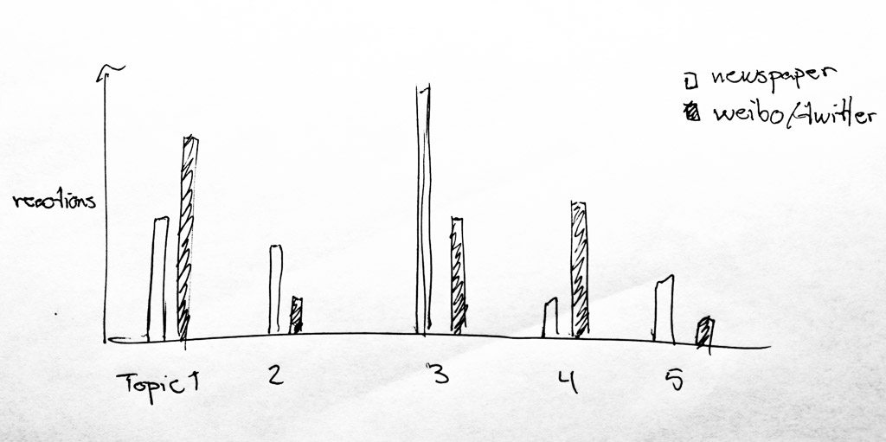
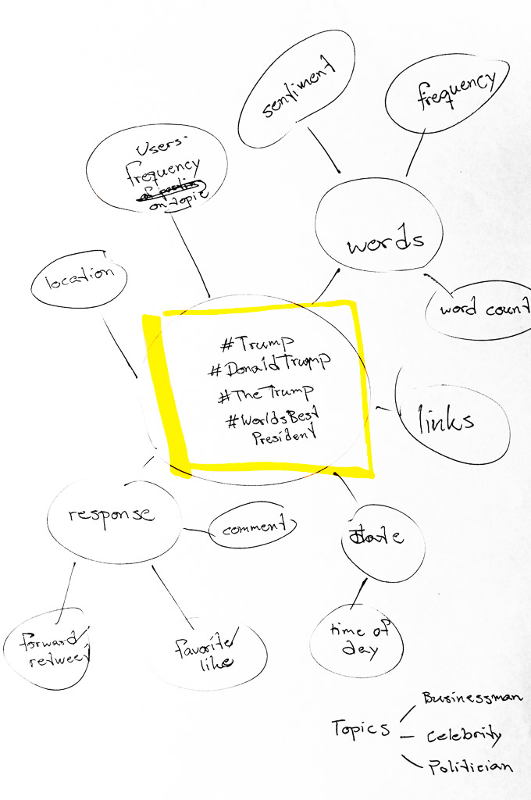

Data Visualization, Tongji University
This repository contains code used as part of a project in data visualization at Tongji University spring 2016. Due to limited knowledge in R, some manual operations are needed to manipulate the Excel sheets, which are used to store datasets. There is a lot of room for improvement.
Data Story
Initially the plan was to check for trends in Chinese social media, and compare it to newpapers and traditional media channels for differences in which events attracted attntions and if the tone was different.

Due to uncertainty about how to choose media sources, as well as the problem with only working with data in Chinese, the scope was changed to be a ocmparison between the US and China. A topic which seemed to create reactions in both countries was Donald Trump. Trump's statements regarding China made him a widely discussed personality. The question at this point was which statements created a reaction in China, and which created a reation in the US.
Focus on social media led to the choice of tracking two big micro-blogging platforms, Twitter and Sina Weibo. Using all the different data that could be obtained for every single post on these media, an initial outline of what to compared was established.

Twitter data was pulled from the public API using R and TwitteR package. The limitations of the API meant only 10 days of data could be collected for this project. This led to a change of what to compare. Using sentiment classification visualizations of positive and negative opinions voiced in relation to #DonaldTrump could be made. The heat map revealed a lot of neutral comments, with some weight towards positive.
To understand what topics were discussed in relation to Donald Trump, induvidual tweets were scanned word for word. Counting the occurances of words and presenting them as a word cloud gave a feeling for what topics were currently being discussed.
This data was later interwoven with Sina Weibo data and visualized together.